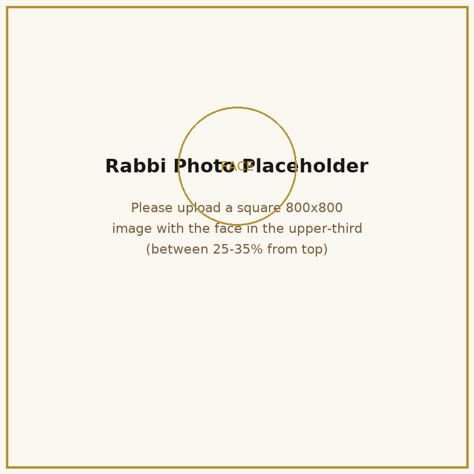

100
₪
לחודש · למשך 48 חודשים
יד לכל אחד — הסכום שכל יהודי יכול להרים ולהיות שותף אמיתי בהרבצת התורה.
הצטרפותמרכז תורה, תפילה וקהילה
"והמשכילים יזהירו כזוהר הרקיע, ומצדיקי הרבים ככוכבים לעולם ועד"
דניאל י״ב, ג׳
לע״נ הרבנית זהבית זוהרה בת אסתר לבית ברבי
בנשיאות הרב שלום יוסף ברבי שליט״א

יש מקומות שנבנים באבן — ויש מקומות שנבנים מתוך אמונה.
מתוך רצון להקים בית של תורה, תפילה, טהרה, חסד ואחדות, אנו זוכים לפעול להקמת „כזוהר הרקיע" — קריה רוחנית שתהיה בעזרת ה׳ מקור של אור, תורה וברכה לתושבי הארץ והגולה ולדורות הבאים.
״כזוהר הרקיע״ אינו רק בניין שאנו מבקשים להקים. זהו חזון שאנו מבקשים לבנות יחד.
כל שותף ושותפה, כל תרומה וכל מעשה טוב מצטרפים לבניין גדול יותר — בניין של תורה, של קדושה, אחדות, חסד ותמיכה לעם ישראל.
אני מזמין אתכם ואתכן להיות שותפים עמנו בזכות הגדולה לבנות מקום שיאיר בעזרת ה׳ לדורות.
בברכה ובתפילה, הרב ברבי
פתח דבר: בלב הנגב, בעיר נתיבות — עיר שצדיקים חקוקים בעפרה, ושערי שמים פתוחים בה לעולם — קם חזון של תורה, תפילה וקהילה.
קריה שלמה של תורה, תפילה וטהרה — אכסניה שתהא ראויה למלכות התורה, בעיצוב ארכיטקטוני שמעורר יראה ומושך את הלב. מתחם 'כזוהר הרקיע' יבנה בסטנדרט יוצא דופן, במטרה להעניק לתורה ולעובדי ה׳ את האכסניה המכובדת והמפוארת ביותר הראויה להם, וליצור מרכז רוחני שוקק חיים המאחד את הקהילה המגוונת והמיוחדת של העיר.
"בית שאין בו שעה ריקה מתורה — הוא בית שמחזיק את העולם. וכל אבן בו, כל שורה של אבנים, נחשבת כאילו בנאה התורם עצמו."
סיור ארכיטקטוני בקריה — לחצו על כל מבנה להרחבה
זו השעה: הקרקע נרכשה, התכניות אושרו, החפירות הסתיימו, היסודות מונחים. מה שמפריד בין החזון למציאות — הוא רק שותפים ושותפות שיקומו ויאמרו "אני בפנים".
בכל דור קמים בונים. בכל דור קמים כמה מיוחדים ומיוחדות שמחליטים — שלא יעבור הזמן מבלי שיטלו חלק במפעל עולמי נצחי. השותפות הזו אינה תרומה שנשכחת — היא השקעה בעולם הבא.
כל המעמיד תלמיד חכם אחד — זכותו עומדת לעולם. כל המעמיד בית של תלמידי חכמים — זכותו נמשכת ומשפיעה על כל אהוביו ומשפחתו.
כל סכום הוא חלון לדורות · ניתן לשלם חודשי או חד-פעמי
יד לכל אחד — הסכום שכל יהודי יכול להרים ולהיות שותף אמיתי בהרבצת התורה.
הצטרפות180 = עשר פעמים חי. שותפות המכפילה חיים — לעצמכם, ליקיריכם, ולכלל ישראל.
הצטרפות360 = ימות החמה. שותף בכל יום מימות השנה. הזכרת שם קבועה בבית המדרש, שילוב בלוח השותפים, וברכת הרב.
הצטרפותשותפות מורחבת לזכות בית שלם — הטבות מיוחדות, הזכרות מוגברות, ושילוב מכובד בלוח השותפים.
הצטרפות1,080 = 60 פעמים חי. זכות של מחזיק ישיבה — שילוב מרכזי בלוח הזהב, הקדשת פינה בבית המדרש, וברכה אישית מהרב.
הצטרפות✦ ניתן לתרום גם לעילוי נשמת יקירים, לרפואת חולים, או להצלחת הבית — גם דרך האתר וגם דרך המזכירות ✦
"שמות השותפים חקוקים לדורות — נזכרים מדי יום בפי לומדי המקום"
תרומה בעילום שם — אפשרית ומכובדת
זמינים בשעות היום והלילה
תרומה מאובטחת דרך נדרים פלוס · קבלה לפי סעיף 46
לתרומה מקוונתיהי רצון שכל התורמים והתורמות, השותפים והשותפות, יזכו לכל הברכות והישועות, ולראות בבניין בית המקדש במהרה בימינו, אמן.